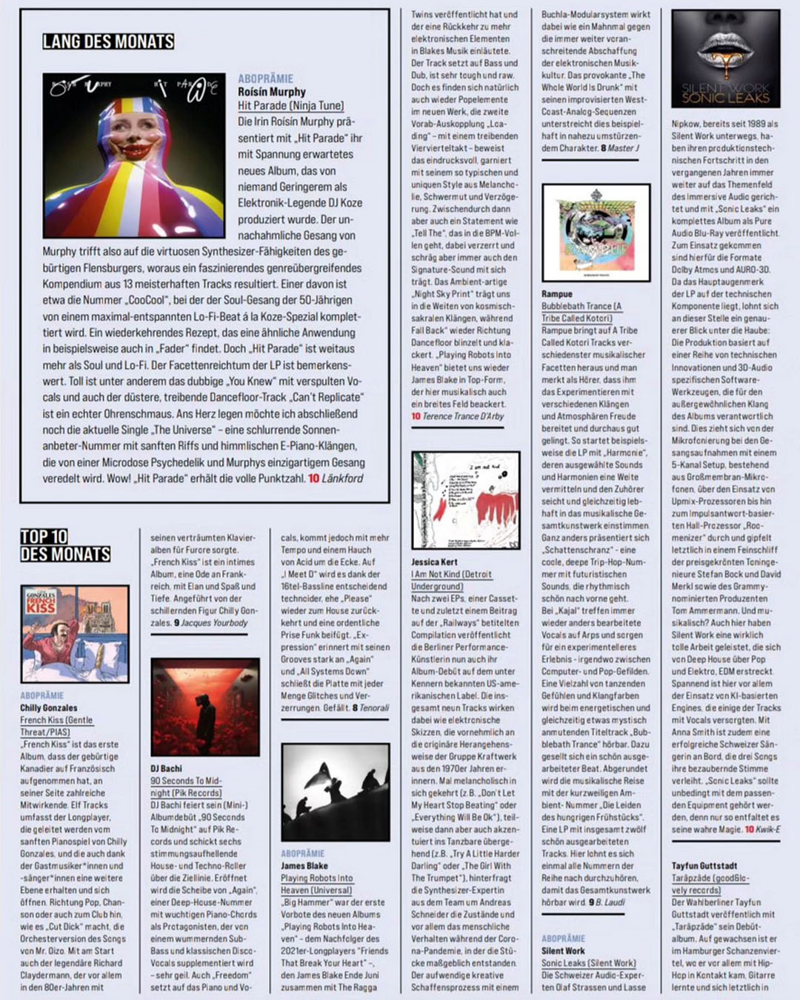

Untitled, 2020, acrylic on canvas, 160 x 150 cm
Jessica Kert - I Am Not Kind (Detroit Underground) "After two EPs, a cassette and most recently a contribution to the compilation titled "Railways", the Berlin performance artist is now releasing her album debut on the US label known among "connaisseurs". The nine tracks are like electronic sketches that are primarily reminiscent of the original approach of the group Kraftwerk from the 1970s. Sometimes melancholic and introspective (e.g. "Don't Let My Heart Stop Beating" or "Everything Will Be Ok"), but sometimes also accentuated and danceable (e.g. "Try A Little Harder Darling" or "The Girl With The Trumpet"), the synthesiser expert from Andreas Schneider's team questions the conditions and, above all, human behaviour during the coronavirus pandemic, during which the pieces were largely created. The elaborate creative process with a Buchla modular system acts as a memorial against the ever-advancing abolition of electronic music culture. The provocative "The Whole World Is Drunk" with its improvised West Coast analogue sequences underlines this in an exemplary and almost overturning way. 08 Master J" Fazemag

Music : Jessica Kert
Mastered : Master J
Artwork : Charlene Levasseur
Label : Detroit Underground